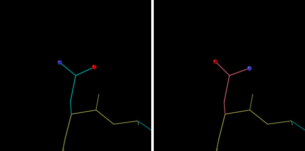
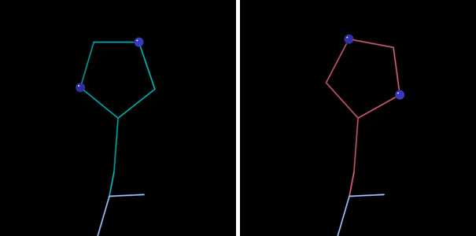
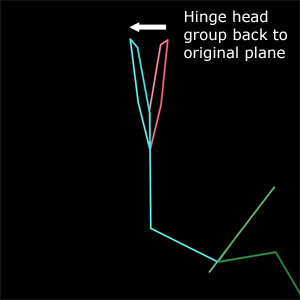
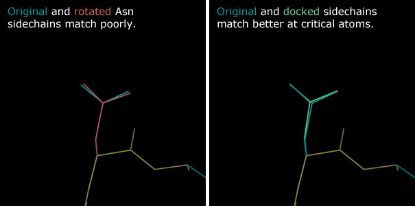
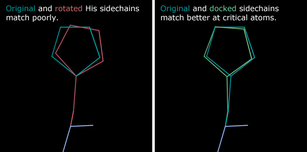

Reduce guide
Reduce Overview
Adding hydrogens
Reduce is a program developed by the Richardson Lab for adding hydrogen atoms to models of biological macromolecules.Hydrogen atoms make up roughly half the atoms in a biological macromolecule, and interactions involving one or more hydrogen atoms dominate the interatomic contacts in models of these macromolecules. Correct placement of hydrogen atoms is therefore essential to an accurate contact analysis of a macromeolecular model. However, hydrogen atom positions are not usually resolved by x-ray crystallography experimental data, and so hydrogens are often left out of models. Reduce provides a computational method to calculate expected hydrogen positions.
Reduce places hydrogens based on expected atomic geometry lengths and angles. Where appropriate, it calculates atomic contact networks, and attempts to place hydrogens so as to facilitate hydrogen bonds and avoid steric clashes.
NQH Flips
NQH "flips" are automatic repositioning of certain sidechains by Reduce to improve the all-atom contacts in a model.The protein sidechains Asparagine (N), Glutamine (Q), and Histidine (H) have asymmetric head groups, but are easily modeled in the wrong orientation in ambiguous density. However, when Reduce calculates atomic contact networks, it can detect the correct orientations of NQH residues. This detections is based on which orientation promotes hydrogen bonds and avoids steric clashes.

By default, adding hydrogens in MolProbity will perform flips for which there is convincing evidence. In stand-alone Reduce, use the -flip flag to access this functionality. Records of flipped residue choices and the scoring behind them are printed to the resulting PDB file as USER MOD records.

How NQH Flips are performed
The current "flip" method is a three step process - an intuitive move, followed by two corrections.180° rotation
First, the head group of the residue is rotated 180°. The stem atoms of the head group define the axis of this rotation (Cβ-Cγ for ASN and HIS, Cγ-Cδ for GLN).Head group hinge
The atoms of the head group are not always modeled in plane with the stem. If the head group atoms are not in plane with the stem, the rotation moves those atoms away from their original positions. To correct for this move, the head group is hinged back into the same plane as its original position.
Three point dock
The atoms of the head group are asymmetric. Therefore, the 180° rotation moves the head group atoms away from the original atom positions, affecting the atomic contacts. A three-point dock corrects for this move.
The sidechain is three-point docked as a rigid body. The first point is the Cα position, which is held constant. The terminal atoms (Oδ1 and Nδ2 for ASN, Oε1 and Nε2 for GLN, Cε1 and Nε2 for HIS)
